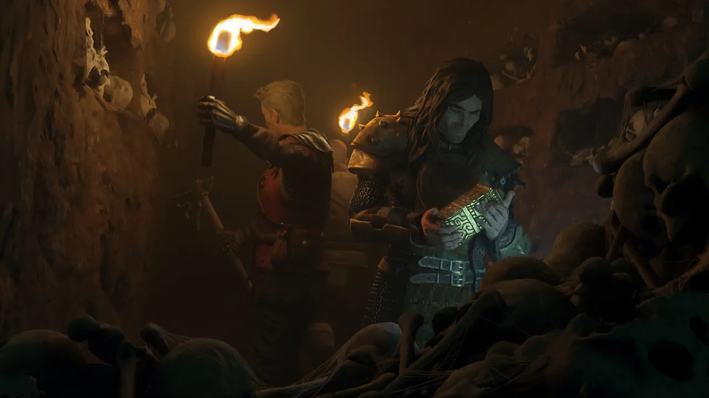
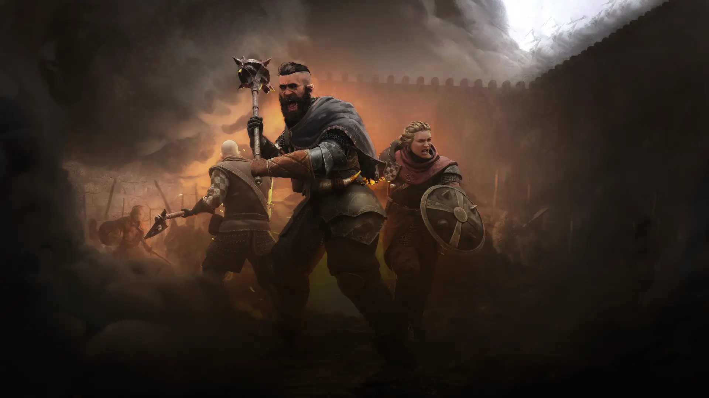
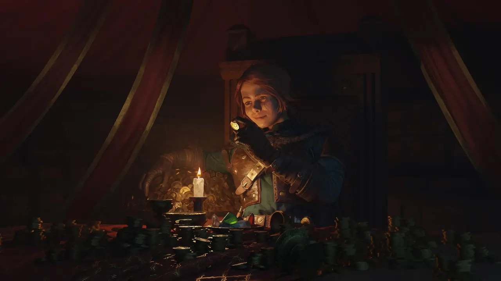
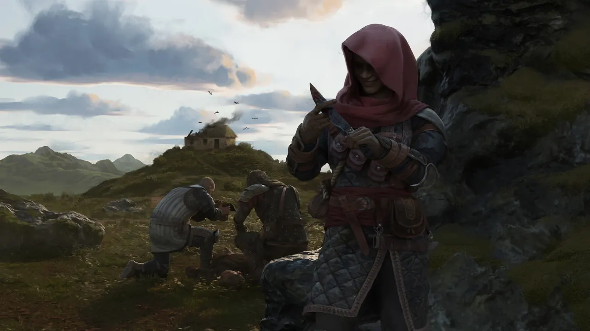
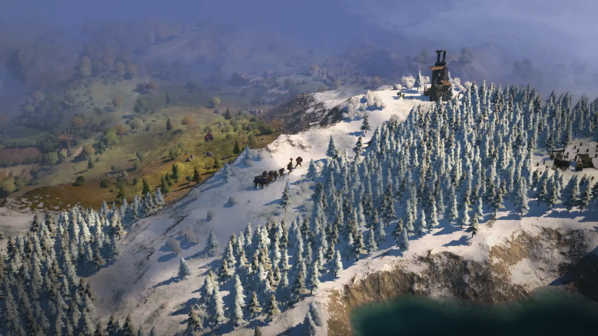
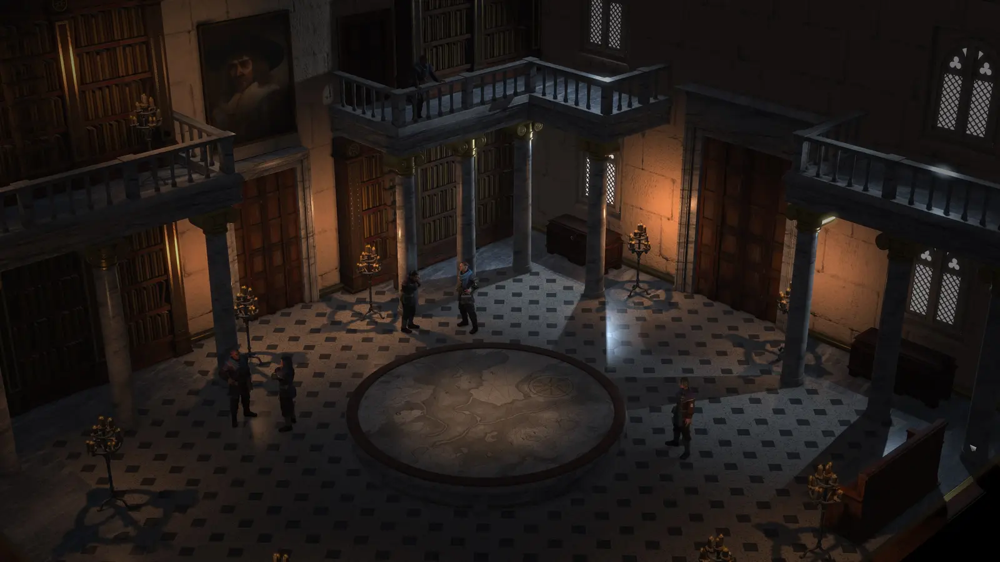
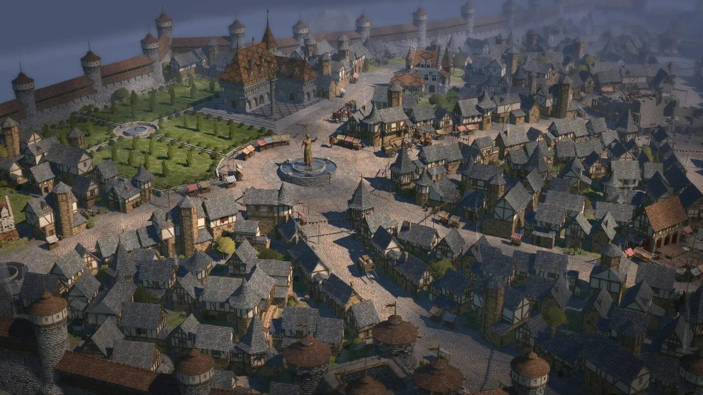
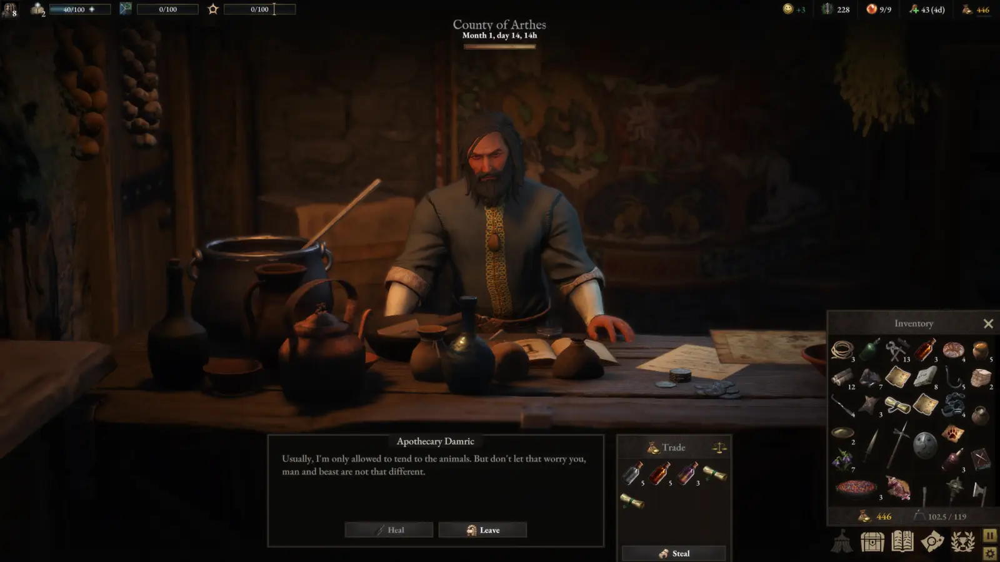
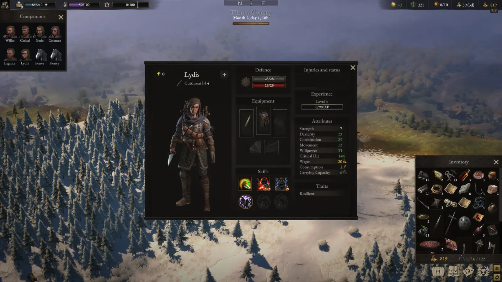
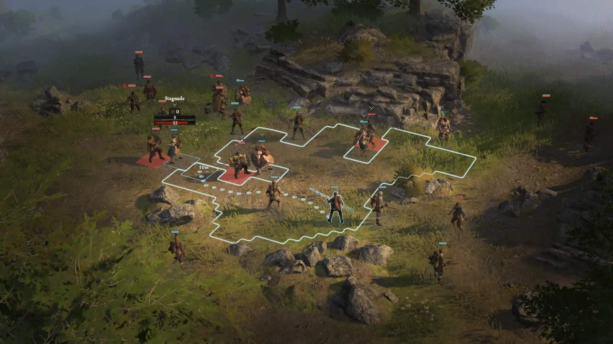

Explorer
Un monde ouvert sans chemin imposé : six régions, leurs villes, leurs camps de bandits et les tombeaux des anciens. Chaque région cache ses contrats et ses secrets.

Il y a cent ans, l'Empire edoran s'est effondré, emporté par la peste. Sur ses ruines, le banditisme et les contrats de mercenaires sont devenus la seule loi. Vous n'êtes pas un héros : seulement le chef d'une compagnie qui doit survivre.
Un RPG tactique en monde ouvert, avec des combats au tour par tour, à jouer seul ou jusqu'à quatre en coopération.

Un monde ouvert sans chemin imposé : six régions, leurs villes, leurs camps de bandits et les tombeaux des anciens. Chaque région cache ses contrats et ses secrets.

Chaque compagnon a ses traits, son métier (forgeron, alchimiste, barde…) et son salaire. Il faut le nourrir, le payer et l'équiper, sans quoi il pourrait bien aller voir ailleurs.

Primes, commerce, artisanat : l'argent fait tenir la compagnie. Du moins jusqu'au prochain combat.
L'ordre conseillé des régions, selon le niveau des compagnons.
Version PC, clavier et souris. Les touches se configurent dans les options.
| Clic gauche | Se déplacer, interagir |
| Clic droit | Pivoter la caméra |
| Maj | Courir |
| Alt | Surligner les éléments interactifs |
| C | Monter le camp |
| I M | Inventaire, carte du monde |
| W A S D | Déplacer la caméra |
| 1 | Déplacer le compagnon |
| 2 | Attaque de base |
| 3 à 0 | Compétences |
| Espace | Terminer le tour |
| F5 | Sauvegarder |
Cliquer sur une capture pour l'agrandir.





